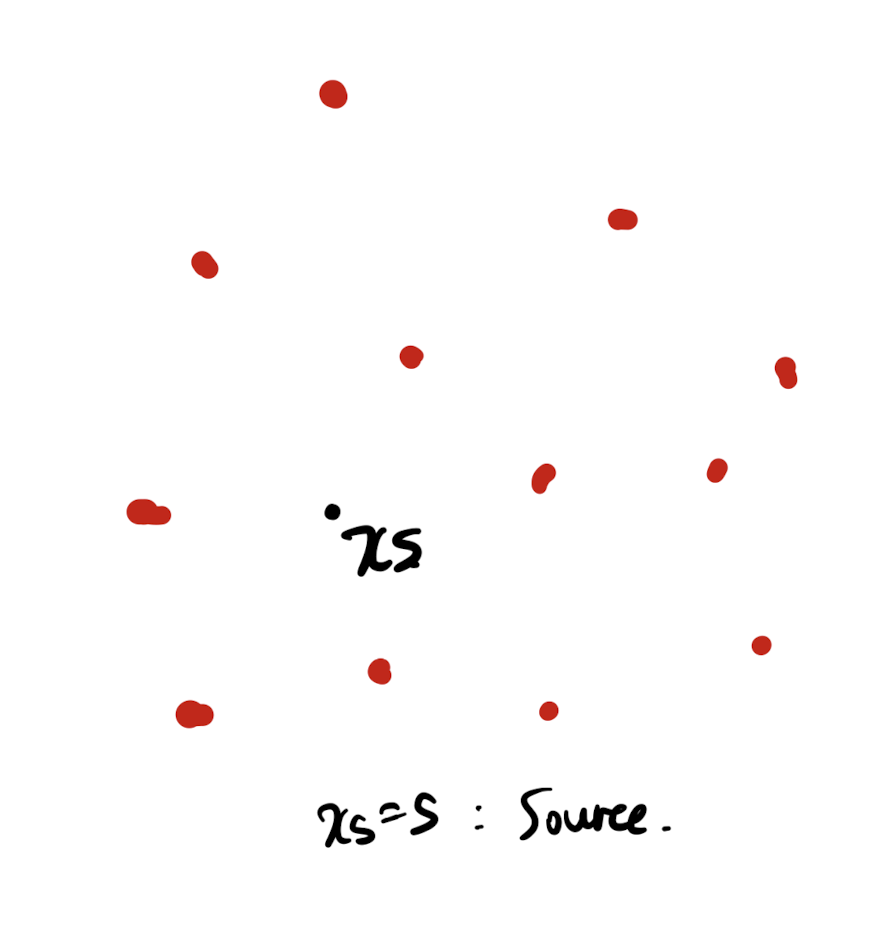
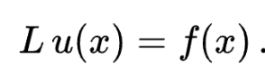
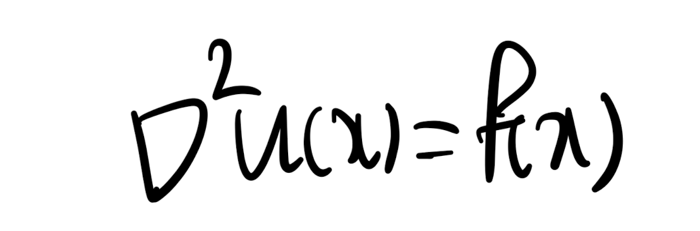
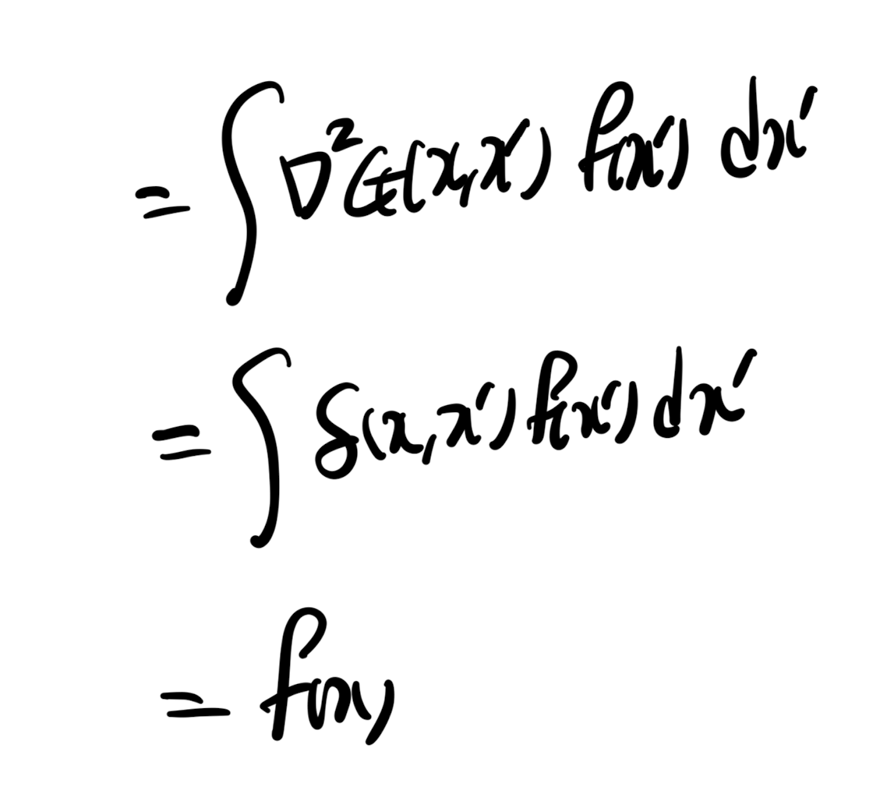
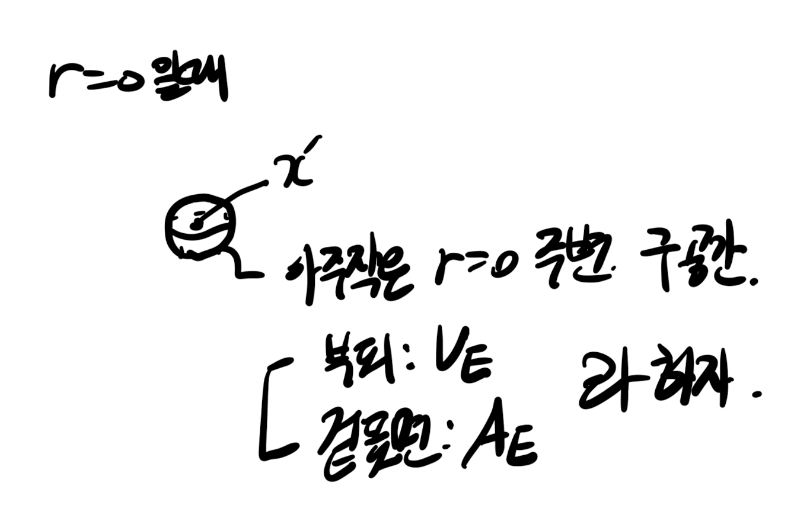
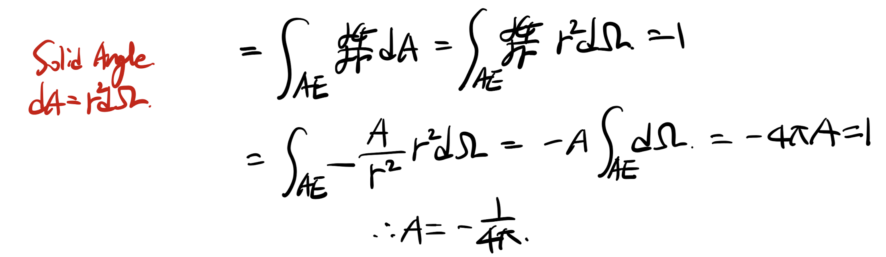
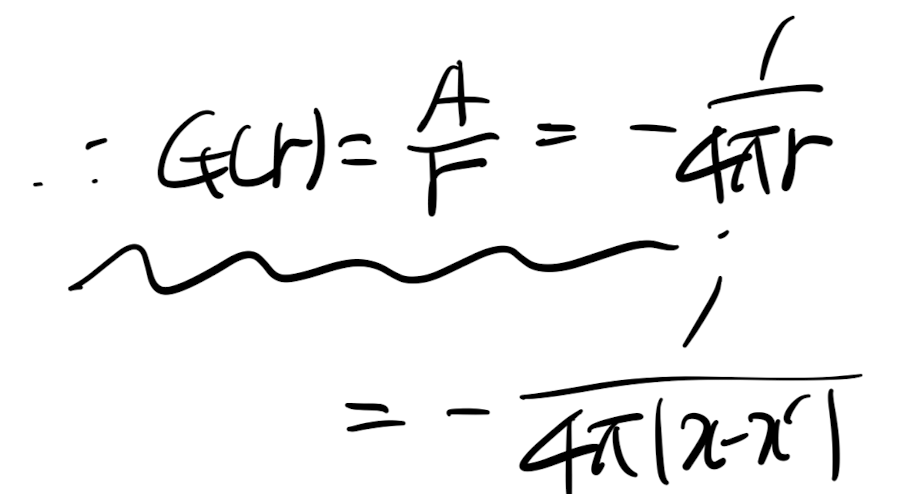
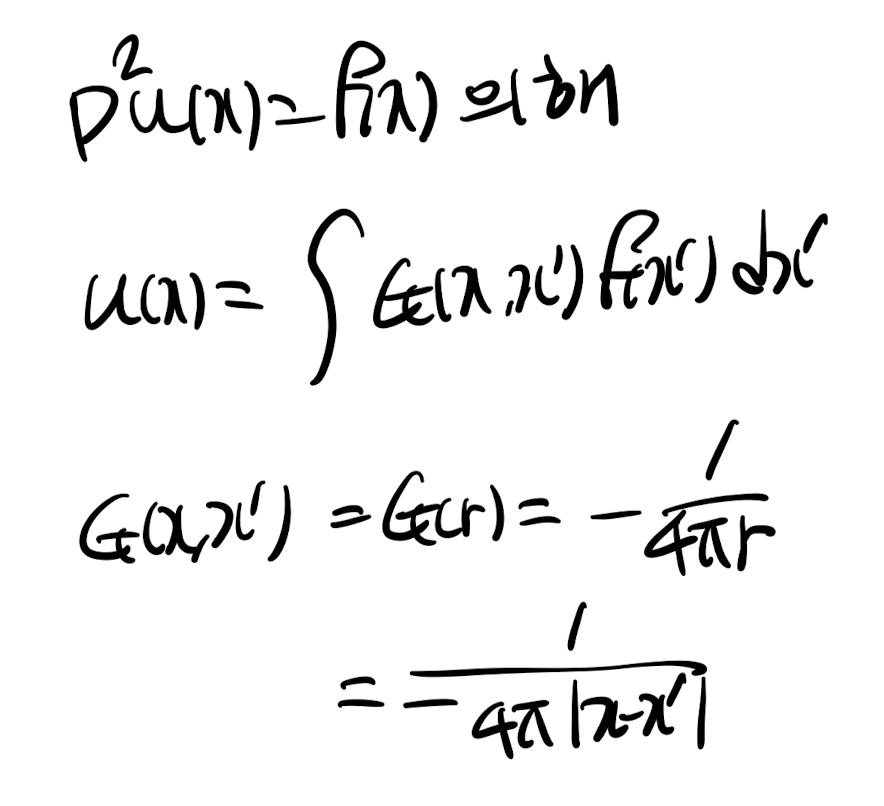

<!DOCTYPE html>
<html lang="ko">
<head>
  <meta charset="utf-8">
  <meta name="viewport" content="width=device-width, initial-scale=1">
  <title>Ch3 Vorticity dynamics_ Biot-Savart Vortex induction law(1) | Sehyeog Kim</title>
  <link rel="stylesheet" href="../../../assets/css/style.css">
</head>
<body>
  <!-- Mobile header -->
  <header class="mobile-header">
    <span class="site-title">Sehyeog Kim</span>
    <button class="menu-toggle" aria-label="Menu">&#9776;</button>
  </header>
  <div class="sidebar-overlay"></div>

  <div class="site-wrapper">
    <!-- Sidebar -->
    <aside class="sidebar">
      <div class="sidebar-bg">
        
      </div>
      <div class="sidebar-profile">
        
        <h1 class="profile-name">Sehyeog Kim</h1>
        <p class="profile-bio">AI &amp; Computational Engineering<br>Knowledge Base</p>
        <div class="profile-links">
          <a href="https://github.com/Sehyeogkim" target="_blank" rel="noopener">
            <svg viewBox="0 0 16 16" width="16" height="16" fill="currentColor"><path d="M8 0C3.58 0 0 3.58 0 8c0 3.54 2.29 6.53 5.47 7.59.4.07.55-.17.55-.38 0-.19-.01-.82-.01-1.49-2.01.37-2.53-.49-2.69-.94-.09-.23-.48-.94-.82-1.13-.28-.15-.68-.52-.01-.53.63-.01 1.08.58 1.23.82.72 1.21 1.87.87 2.33.66.07-.52.28-.87.51-1.07-1.78-.2-3.64-.89-3.64-3.95 0-.87.31-1.59.82-2.15-.08-.2-.36-1.02.08-2.12 0 0 .67-.21 2.2.82.64-.18 1.32-.27 2-.27.68 0 1.36.09 2 .27 1.53-1.04 2.2-.82 2.2-.82.44 1.1.16 1.92.08 2.12.51.56.82 1.27.82 2.15 0 3.07-1.87 3.75-3.65 3.95.29.25.54.73.54 1.48 0 1.07-.01 1.93-.01 2.2 0 .21.15.46.55.38A8.013 8.013 0 0016 8c0-4.42-3.58-8-8-8z"/></svg> GitHub
          </a>
        </div>
      </div>
      <nav class="sidebar-nav">
        <a href="/" class="nav-item nav-home">Home</a>
        <span class="nav-label">Categories</span>
        <a href="/blog/advanced-engineering-mathematics/" class="nav-item">Advanced_Engineering_Mathematics<span class="nav-post-count">14</span></a>
        <a href="/blog/agentic-ai/" class="nav-item">Agentic_AI<span class="nav-post-count">8</span></a>
        <a href="/blog/blood-flow-and-metabolism/" class="nav-item">Blood-Flow-and-Metabolism<span class="nav-post-count">12</span></a>
        <a href="/blog/cardiovascular-diseases/" class="nav-item">CardioVascular_Diseases<span class="nav-post-count">8</span></a>
        <a href="/blog/computational-linear-algebra/" class="nav-item">Computational-Linear-Algebra<span class="nav-post-count">15</span></a>
        <a href="/blog/continuum-mechanics/" class="nav-item">Continuum-Mechanics<span class="nav-post-count">9</span></a>
        <a href="/blog/deep-learning/" class="nav-item">Deep-learning<span class="nav-post-count">14</span></a>
        <a href="/blog/finite-element-method/" class="nav-item">Finite-Element-Method<span class="nav-post-count">1</span></a>
        <a href="/blog/fluid-mechanics/" class="nav-item">Fluid_Mechanics<span class="nav-post-count">18</span></a>
        <a href="/blog/gas-dynamics/" class="nav-item">Gas_Dynamics<span class="nav-post-count">24</span></a>
        <a href="/blog/heat-transfer/" class="nav-item">Heat-transfer<span class="nav-post-count">8</span></a>
        <a href="/blog/machine-learning/" class="nav-item">Machine_Learning<span class="nav-post-count">11</span></a>
        <a href="/blog/numerical-heat-transfer-and-fluid-flow/" class="nav-item">Numerical-Heat-transfer-and-Fluid-flow<span class="nav-post-count">14</span></a>
        <a href="/blog/sensitivity-analysis/" class="nav-item">Sensitivity_Analysis<span class="nav-post-count">3</span></a>
        <a href="/blog/solid-mechanics/" class="nav-item">Solid_Mechanics<span class="nav-post-count">25</span></a>
        <a href="/blog/thermodynamics/" class="nav-item">Thermodynamics<span class="nav-post-count">14</span></a>
        <a href="/blog/viscous-flow/" class="nav-item active">Viscous_Flow<span class="nav-post-count">28</span></a>
      </nav>
    </aside>

    <!-- Main content -->
    <main class="main-content">
      <div class="breadcrumb">  <a href="/">Home</a><span class="sep">/</span>  <a href="/blog/viscous-flow/">Viscous_Flow</a><span class="sep">/</span>  <span>Ch3 Vorticity dynamics_ Biot-Savart Vortex induction law(1)</span></div>
<a href="/blog/viscous-flow/" class="back-link">&larr; Back to Viscous_Flow</a>
<div class="page-header"><h1>Ch3 Vorticity dynamics_ Biot-Savart Vortex induction law(1)</h1></div>
<div class="post-meta"><span class="meta-item"><span class="meta-label">Date:</span> 2024-10-18</span><span class="meta-item"><span class="meta-label">Category:</span> Viscous_Flow</span><span class="meta-item"><span class="meta-label">Source:</span> <a href="https://jeffdissel.tistory.com/118" target="_blank" rel="noopener">link</a></span></div>
<article class="post-content"><p>여기서, 한가지 의문점이 든다.<br />
vorticity, w = curl(v)<br />
라는 것을 우리는 알고 있고,<br />
만약에 vorticity 를 토대로<br />
Velociy(속도) 장을 구할 수 있을까??<br />
해답인<br />
Vorticity 와 Velocity<br />
관계식을 유도해보자.</p>
<hr />
<p>interface가 존재하지 않는,<br />
unbounded fluid라고 가정해보자.<br />
laplace u 는 벡터의 성질로 다음과 같이 분리 할 수 있다.<br />
<br />
여기서 incompressible 가정을 해주면,<br />
연속방정식으로 인해서,<br />
따라서,<br />
curl(v) = w임을 이용하여 다음과 같이 표현이 가능하다.<br />
<br />
핵심은<br />
이 방정식에서 w를 알고 있을때<br />
u를 유도하는게 우리의 목적이다.<br />
위 함수의 general form은<br />
<br />
위 general 미분방정식의 해를 구하기 위해서<br />
2가지 개념<br />
이 필요하다.<br />
1. Dirac Delta function: δ<br />
<br />
<br />
Graph of Delta Function.<br />
다음 중요 개념을 설명할때,<br />
필요하기 때문에 델타 함수를<br />
정확히 이해해야 한다.<br />
2. Green's function: G<br />
<br />
이를 쉽게 풀어서 이해해보자.<br />
<br />
어떠한 공간에 빨간색의 수많은 점들이 존재한다고 가정하고,<br />
그 중 검정색 Source 를 집중해보자.<br />
Source(x_s)에서 발산하는<br />
something<br />
이 있다고 했을때<br />
그로부터, 수많은 주변 점들에게<br />
어떠한 영향<br />
을 줄 것이다.<br />
<br />
(something이 무엇인가는<br />
풀려고하는 방정식의 u(x), f(x)에<br />
따라서 Physical meaning이 달라진다.)<br />
그 something이 주변에 어느 정도의 영향을 주는지가 바로<br />
G(x,s) Green's function<br />
이다.<br />
<br />
정의를 살펴보면,<br />
영향을 주는 정도에 어떠한 미분연산자(L)을<br />
씌워주면, 다음과 같이 x = s(source)에서만 존재하는<br />
델타 함수의 형태로 나오게 된다.<br />
<br />
처음에, 저렇게 정의한 어떤 물리적의미에 대해서 계속해서<br />
의문을 가졌었다.<br />
As far as I understood,<br />
왜 (저렇게 영향을 주는 정도,G)에 L을 씌우면 delta function이 되는지에<br />
물리적 의미보다는<br />
우리가 풀고 싶은 미분 방정식<br />
<br />
을 풀기위해서, (도구로써) G를 저렇게 정의했다고<br />
저는 이해하였습니다.<br />
여기서 우리는<br />
미분 연산자 L = laplace<br />
일때를 살펴보자.<br />
즉, 우리가 풀방정식은<br />
<br />
이를 풀기 위해서,<br />
다음과 같이 정의된 Green's function, dirac delta function<br />
을 사용할 것이다.<br />
<br />
결론부터 말씀 들이면,<br />
해는 다음과 같이 표현된다.<br />
<br />
G(x,x'): x'(source 좌표)에서 x에 주는 영향의 정도,<br />
f(x'): Source 좌표 함수<br />
즉, 물리적으로 해석해보면,<br />
수많은 source들이 함수(F(x'))에 존재하고,<br />
각각 소스<br />
들이<br />
특정점 x<br />
에 영향을 줄것이다.<br />
그 영향의 합을 integral 로 표현한 것.<br />
<br />
자 이제 위 해를 증명해보자.<br />
<br />
양변을 Laplace연산자를 씌워주자.<br />
여기서 Laplace 연산자는 x에 대한 연산자 이므로,<br />
다음과 같이, G(x,x')에 만 적용된다.<br />
green's function의 정의에 따라 delta function으로 바꾸어 주자.<br />
<br />
여기서 핵심은 delta 함수에서 source 가 x 좌표 라는 것이다.<br />
(x'은 여기서 적분 연산자 이다 햇갈리기 쉽지만..)<br />
따라서, delta function는<br />
x' = x 일때만 해가 존재하고, 이때만<br />
delta(x,x')f(x')이 존재하게 된다.<br />
따라서 적분을 하게 되면, 1이 아닌,<br />
source에서의 함수 값인<br />
f(x)가 나오게 된다.<br />
(x가 source입니다)<br />
이로써,<br />
우리가 풀고 싶었던 라플라스 미분방정식의<br />
해임을 증명하였다.<br />
<br />
여기서,<br />
Green's function을 살펴보면,<br />
source point - x' 이고,<br />
x가 다음과 같은 sphere coordinate에서<br />
움직인다고 상상해보자.<br />
<br />
그랬을때, 우리는 구의 반지름을 abs(x-x')로 정의할 수 있다.<br />
G의 정의에 따라 다음과 같이 dirac delta function으로 나타낼 수 있으며,<br />
핵심은 바로, sphereical coordinate 에서<br />
Radius 이외에는 independent 하다는 것이다.<br />
(source로 부터 영향을 받는 정도를 나타내는 G는<br />
Source와의 거리로만 dependent)<br />
<br />
위 미분 방정식의 G 해를 구하기 위해서,<br />
delta function = 0 일때랑 아닐때로 나누어 보자.<br />
먼저, delat Function = 0 일때,<br />
<br />
(A,B 는 상수)<br />
G 함수 특성상, source와의 거리가 무한이 되면,<br />
source로부터 영향을 받지 않으므로, G = 0 -&gt; B = 0<br />
<br />
여기서, A 상수값을 구하기 위해서<br />
delta function이<br />
0 이 아닐때를 분석해보자.<br />
분석방법은<br />
r =0 근처에 아주 작은 구를 다음과 같이 정의한다.<br />
<br />
델타 함수 성질에 따라서,<br />
</p>
<h6></h6>
<p>r = 0 바로 근처 공간의 적분 = 1 인 이유는<br />
원래 정의는 -infinity ~ +infinity 모든 영역의 적분 = 1 이지만,<br />
사실상 정의에 따라서 r = 0 이외의 공간,<br />
즉, 작은 구 밖의 공간에서는 함수값이 0 이므로 적분 값이 의미가 없어진다..<br />
</p>
<h6></h6>
<p>따라서, laplace G 체적분 = 1이고,<br />
Divergence Theorem으로 면적분으로 전환가능하다.<br />
<br />
이후, G= G(r) 이므로 r dependent only,<br />
+ solid angle 개념을 사용하여 A를 유도할 수 있다.<br />
<br />
<br />
지금까지 했던, 과정들을 간단하게 요약해보면,<br />
<br />
길어진 관계로<br />
다음장에서 이어서 쓰도록 하겠습니다~</p></article>
      <footer class="site-footer">
        <p>&copy; 2026 Sehyeog Kim. Built with gitfolio-inspired theme.</p>
      </footer>
    </main>
  </div>

  <script src="../../../assets/js/main.js"></script>
</body>
</html>